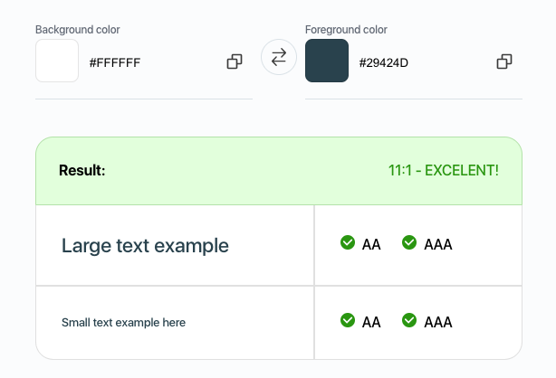
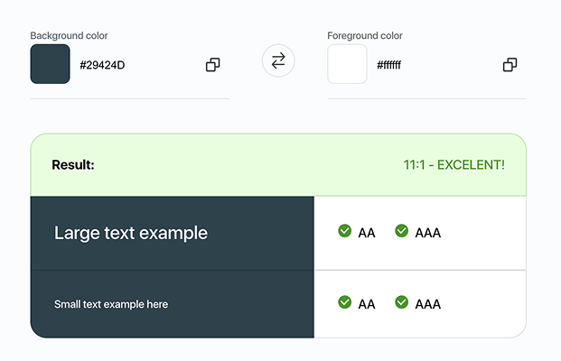
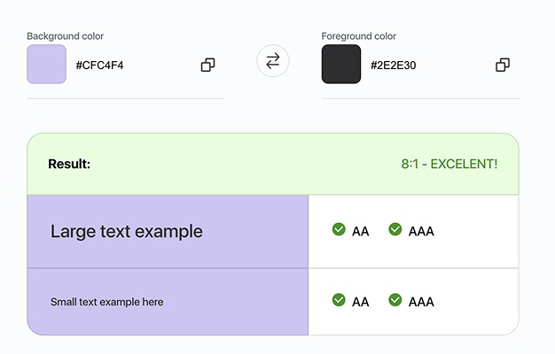

Color Palette
Our brand and interface colors
Color Palette
A comprehensive overview of our brand's color system.
Primary Color
#29424D
Evokes a sense of trust, stability, and renewal, essential for a health-focused application.
Creates a calming and reassuring atmosphere.
Secondary Color
#CFC4F4
Purple is associated with balance, mindfulness, and transformation,
aligning with the Heal_U app’s mission of holistic recovery.
Tertiary Color
#F8F3EC
Soft and neutral tone complements the primary and secondary colors.
Enhances the overall balance of the color scheme.
Accent Color
#CDF06B
Provides strong contrast against dark mode elements for better readability and accessibility.
Enhances interactive elements, making buttons and chips more noticeable and engaging.
Neutral and other
Success Color
#138636
Error Color
#C32D2D
Warning Color
#FFBD11
Information Color
#4976BA
background Color
#FFFFFF
Text Color
#2E2E30
Accessiblilliy
The following image demonstrates that the color contrast meets AAA accessibility standards, ensuring optimal readability and usability for all users.
Text Color
Primary/Background Color
Primary/Background Color
Primary/Tertiary Color

Example


Expressive colors